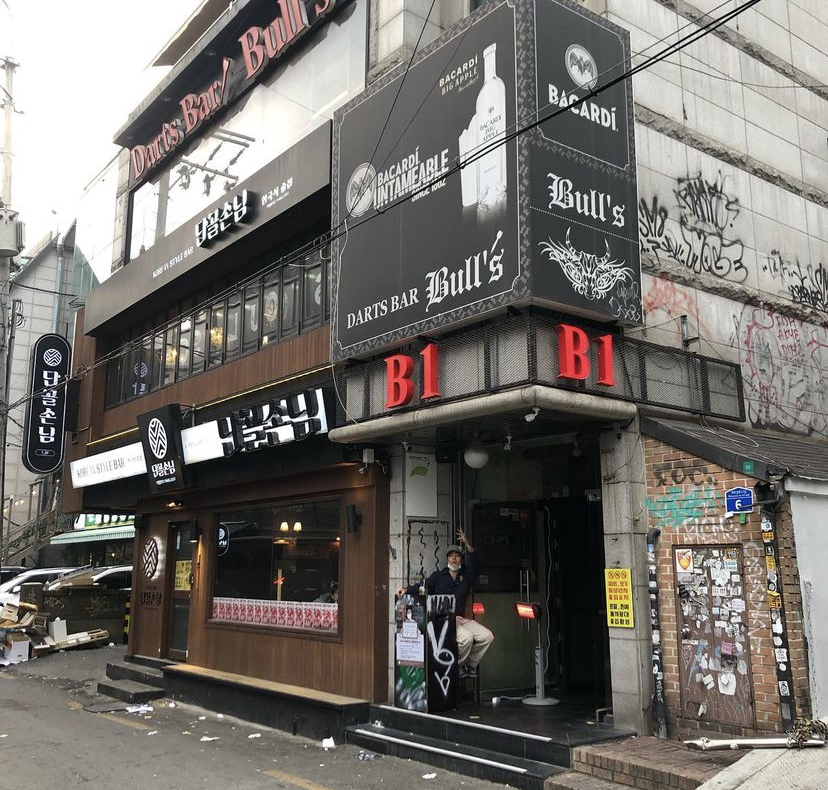

Clubs
Hongdae, the mecca of nightlife, is filled with various clubs and lounge bars. If you want to burn your night, drinking and dancing all night long listening to trendy music from hip hop to electronica, you should go to restless clubs bustling with hot, sexy clubbers at Hongdae. Here are the best club selections in Hongdae recommended by local clubbers.
Best Hongdae Clubs
La Bamba ZenBar Mikes Cabin La Luz B1 LA BAMBA

This is Latin club, a lot of foreigners like to go here, but especially latinos and americans. In this club you will only hear Spanish songs such as Reggeaton, Salsa, or Bachata. La Bamba is not a big club, some people consider it a bar, but on Friday and Saturday it is a definitely a club. You can see everybody dancing al over the place and even on the streets. It is such a fun place to vibe in, but if you do not like crowded places you should avoid this club.
ZENBAR

ZenBar is one of the most popular clubs in Hongdae among the foreigner. This place is really big and the music is good. The play all type of popular music. It can go from Lil Uzi Vert to Taylor Swift. In this club are pool tables where people can get on top and dance. The security is very strict so expect long queue to get it.
MIKES CABIN

There is two pubs, in Hongdae and other in Sinchon, its a different atmosphere, Hongdae is bigger, foostball table, beer pong, darts, skate ramp dance floor, and sinchon is smaller and cozy, more like a old style pub, but both are famous between foreigners living in korea, so, most of koreans come to make western friends. cheapest draft beer, great cocktail and exclusive shots. So if you want to go party, we recommend you going to Hongdae!
LA LUZ

If you want to have a good time with friends over a drink, go to La Luz bar. Located in the center of Hongdae, this bar offers a very entertaining concept: You buy a drink and in exchange, you can enjoy the arcade games at will! You will find different games on each floor and even in the basement where you can find a ping pong table! Also, this place have been gaining more popularity thanks to the korean Netflix show Zombieverse.
B1

This club is really small, but foreigners love going here because the vibes and music are amazing. The staff is nice and it is really easy to make friends here. In this club the mostly play Hip Hop music, so if you are not a fan of this genre and do not like crowded places we do not recommend going to this club.
If you want to see how the Hongdae streets look at night, you can watch this video!
| BEST CLUBS | |
|---|---|
| Foreigners favorites | La Bamba |
| ZenBar | |
| B1 | |
| Koreans favorites | Aura |
| Meta | |
| Gogos2 | |
Guide to night clubs in Hongdae